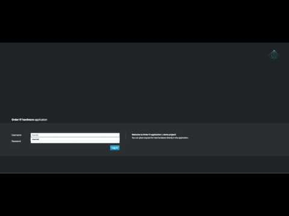

Order IT hardware – jBPM 7 case application
So this is another iteration around Order IT hardware case that allows employees to place requests for new IT hardware. There are three roles involved in this case:
- owner – the employee who placed the order
- manager – direct manager of the employee – the owner
- supplier – available suppliers in the system
- Order placed
- Order shipped
- Delivered to customer
- Hardware spec ready
- Manager decision

So application is built with following components:
- WildFly Swarm as runtime environment
- KIE Server as backend
- PatternFly with AngularJS as front end
Here you can see all available suppliers that can deliver IT hardware:
- Apple
- Lenovo
- Dell
- Others (for anything that does not match above)
At any given time you can take a look at orders
- My orders – those that you (as logged in user) placed
- All orders – lists all orders currently opened
Order details page is build from three parts:
- on left hand side you can see the progress of your order – matching all milestones in the case with their status – currently no progress at all :(
- central part is for case details
- hardware specification document that supplier is expected to deliver
- comments section to discuss and comment on the order
- My tasks, any tasks that are assigned to you (as logged in user) in scope of this order
- right hand side is the people and groups involved in your order – so that can give you a quick link in case you’d like to get in touch
Once document is uploaded, owner of the order can take a look at it via oder details page
Now you can observe some progress on the order – hardware spec was delivered and is available to download in the central section. On the right side you can see the Hardware specification milestone is checked (and green) so it was completed successfully.
Next it’s up to manager to look at the order and approve it or reject it
In case manager decided to reject it, the decision and reason will be available in the order details page.
What is important to note here is, since manager rejected the order there is a new option available in the order to request the approval again. This is only available when order was rejected and can be used to change manager’s decision. This in turn will create dynamic task for the manager (as it does not exist in the case definition) and thus allow manager to change his/her decision.
Entire progress of the order is always available in the order details page when all order data base be easily found.
Once manager approved the order, the order is again handed over to supplier to place physical order for shipment.
Then on order page you’ll find additional action to mark when the order was shipped and later when it was delivered which is usually done by the order owner.
Last but not least is customer satisfaction survey that is assigned to owner for evaluation.
Owner of the order can then provide his/her feedback over the survey that will be kept in order data (case file).
Order is not closed until it’s explicitly closed from order details page… usually by the owner when (s)he feels it’s completed, otherwise more activities can be still added to the order.
Conclusion
The idea for this article is how you can leverage modern BPM to build quickly business systems that bring value and still take advantage of the BPM just in slightly different way then traditional. This application was build in less than 4 days … so any reasonable size application to demo capabilities should be doable in less than a week. That’s the true power of the modern BPM!
Feel like to try it yourself? Nothing easier then just do it. Just follow instructions and off you go!!!
Share your feedback

{kind=link}
{kind=link}
{kind=link}
{kind=link}
{kind=link}
{kind=link}
{kind=link}
{kind=link}
{kind=link}
{kind=link}
{kind=link}
{kind=link}